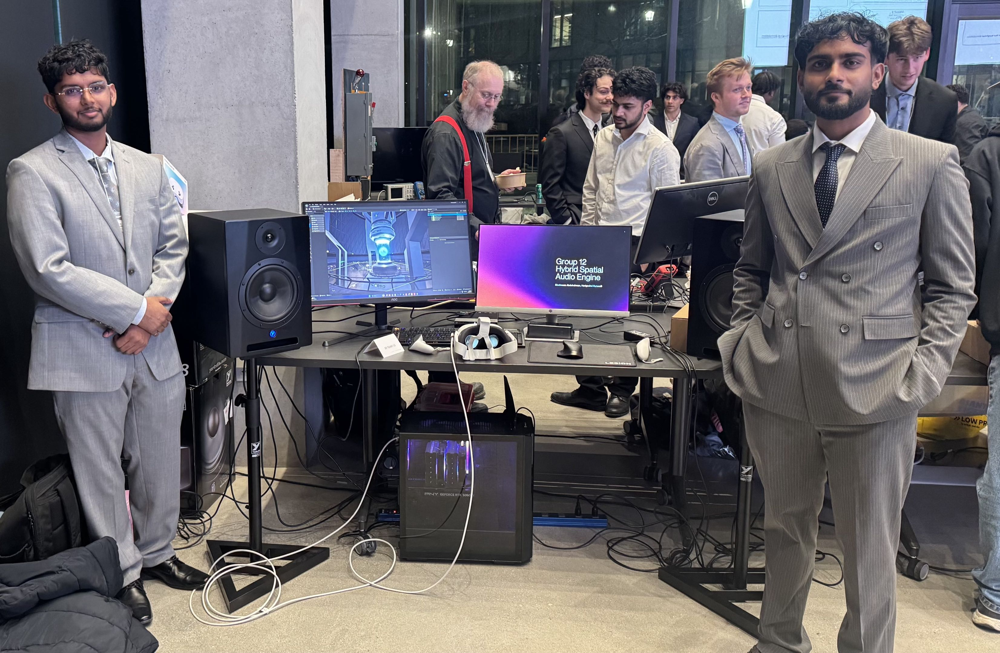
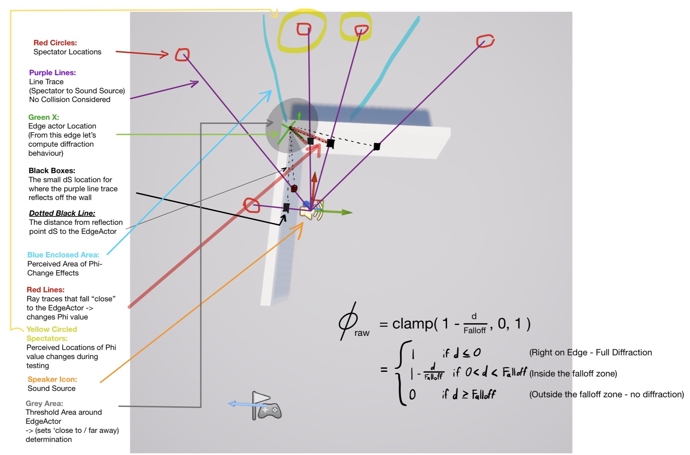
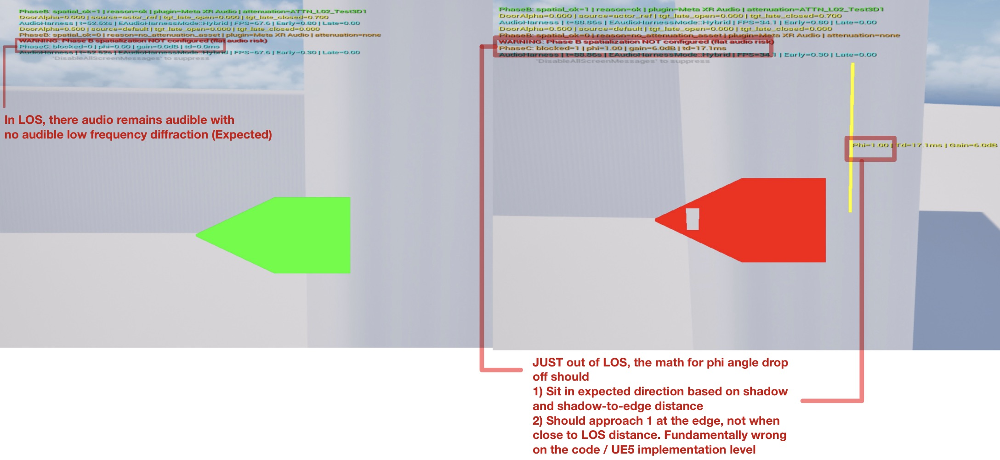
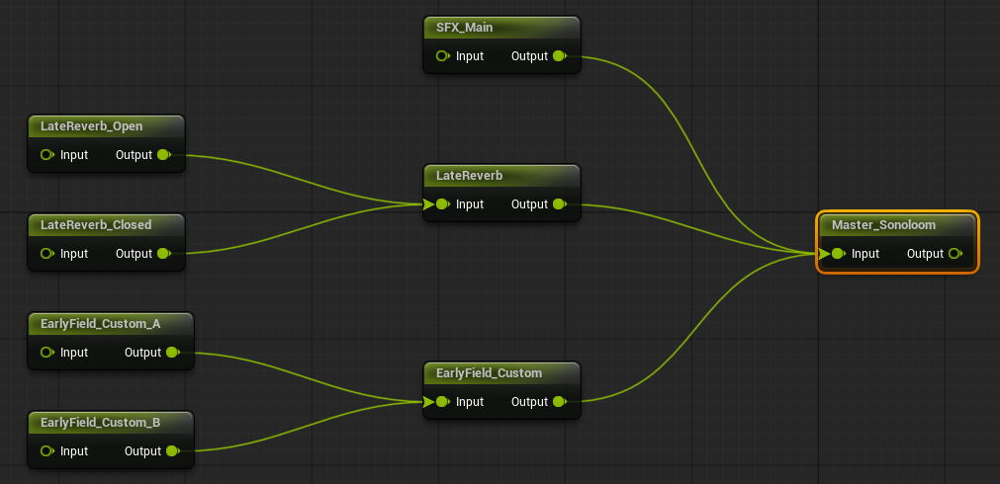

Hybrid VR spatial audio engine
Sonoloom is the spatial audio system my capstone partner and I built for VR in Unreal Engine 5. It goes after two things that VR audio usually gets wrong: bass that drops out when a sound source goes behind a wall, and early reflections that sound unstable when the engine can only afford a few rays.

How it works
The system has three layers. Meta XR Audio handles head-tracked binaural playback and late reverb. On top of that, an edge-diffraction layer keeps low frequencies audible around obstacles, and a neural model takes a cheap low-ray room impulse response and refines it toward what a high-ray simulation would give. The refined response goes into a two-lane convolution stage that crossfades between responses so updates don’t click.
Everything ran in Unreal Engine 5.6 on a Meta Quest 3S over Quest Link.
What I worked on
On the model side, I worked on training and evaluating the causal 1D U-Net, which learned from 9,000 paired low-ray and high-ray impulse responses generated with pyroomacoustics.
In the engine, I built and debugged the C++ components that react to changing scene geometry and listener position. I moved model inference and the other heavy processing onto a worker thread so the real-time audio callback never waits on it. I also tested and debugged the system on the headset.
Sound around an edge
When a source is blocked, the diffraction layer traces toward it and measures how far the traced point lands from a designated edge (d), compared with a chosen falloff distance (F):
φ is 1 right at the edge and 0 once the point is past the falloff distance. It drives a low-shelf filter, so the bass fades gradually as a source moves behind an obstacle instead of cutting out. The check runs 20 times a second. It is a geometric approximation rather than a wave simulation, but it is cheap and stable enough for real time.


Swapping responses without clicks
Each new impulse response loads into whichever of the two convolution lanes is idle. The lanes then crossfade over 30–60 ms using a half-cosine curve:

Picking the inference backend
The original plan was to run the model on the CPU with ONNX Runtime. With the full 1.28M-parameter model that averaged 14.5 ms per inference, far too slow, so we moved to TensorRT at FP16 on the GPU. An earlier design comparison showed a smaller model of about 400K parameters could meet a 3 ms CPU target, but we wanted the larger model. The trade-off is that the runtime now needs an NVIDIA GPU and a compiled engine.
| Backend | Mean | p99 | Target |
|---|---|---|---|
| ONNX Runtime, CPU | 14.533 ms | not recorded | — |
| TensorRT FP16, GPU | 0.413 ms | 0.52 ms | under 1 ms, met |
500 runs after 20 warm-up runs on an RTX 5060 Ti (CUDA 12.8, TensorRT 10.15).
Those are standalone numbers. Inside Unreal, with the thread scheduler involved, inference averaged 3.1–4.6 ms with occasional spikes up to about 15 ms. That still fits, because the model only has to run 10–30 times a second.
Results
We tested the model on 1,000 held-out synthetic scenes. Its C50 error against the high-ray reference was 1.373 dB, under the 2 dB target, and it produced no measurable pre-echo.
Those results are on synthetic data. We didn’t get to a matched high-ray comparison inside Unreal, so they don’t prove the same accuracy in the engine.